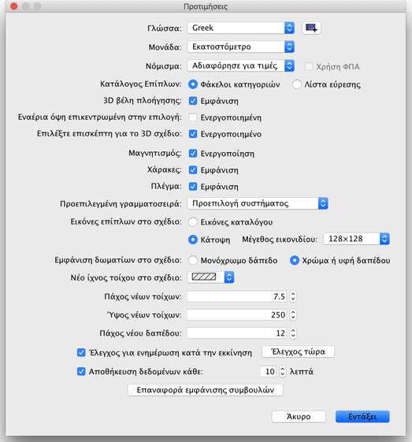

| Επεξεργασία προτιμήσεων | |||
Για να επεξεργαστείτε τις προτιμήσεις Sweet Home 3D επιλέξτε Sweet Home 3D > Προτιμήσεις... σε Mac OS X ή Αρχείο > Προτιμήσεις... σε άλλα λειτουργικά συστήματα.  Στον πίνακα προτιμήσεων μπορείτε να επιλέξετε τη Γλώσσα που χρησιμοποιείται στη διεπαφή χρήστη Sweet Home 3D και τη Μονάδα μέτρησης που χρησιμοποιείται για τον σχεδιασμό των χαράκων και του πλέγματος του σχεδίου οικίας και να εμφανίσετε μήκη και χώρους. Τέλος, το κουμπί Επαναφορά της εμφάνισης συμβουλών αλλάζει τις απαντήσεις που δώσατε στο κουτί επιλογής Να μην εμφανιστεί ξανά αυτή η συμβουλή που βρίσκεται στο πλαίσιο διαλόγου συμβουλών το οποίο εμφανίζεται όταν κάνετε κλικ σε ορισμένα εργαλεία. Αυτό σημαίνει ότι όλα τα πλαίσια διαλόγου όπου επιλέξατε αυτό το κουτί επιλογής θα εμφανίζονται και πάλι. |
|